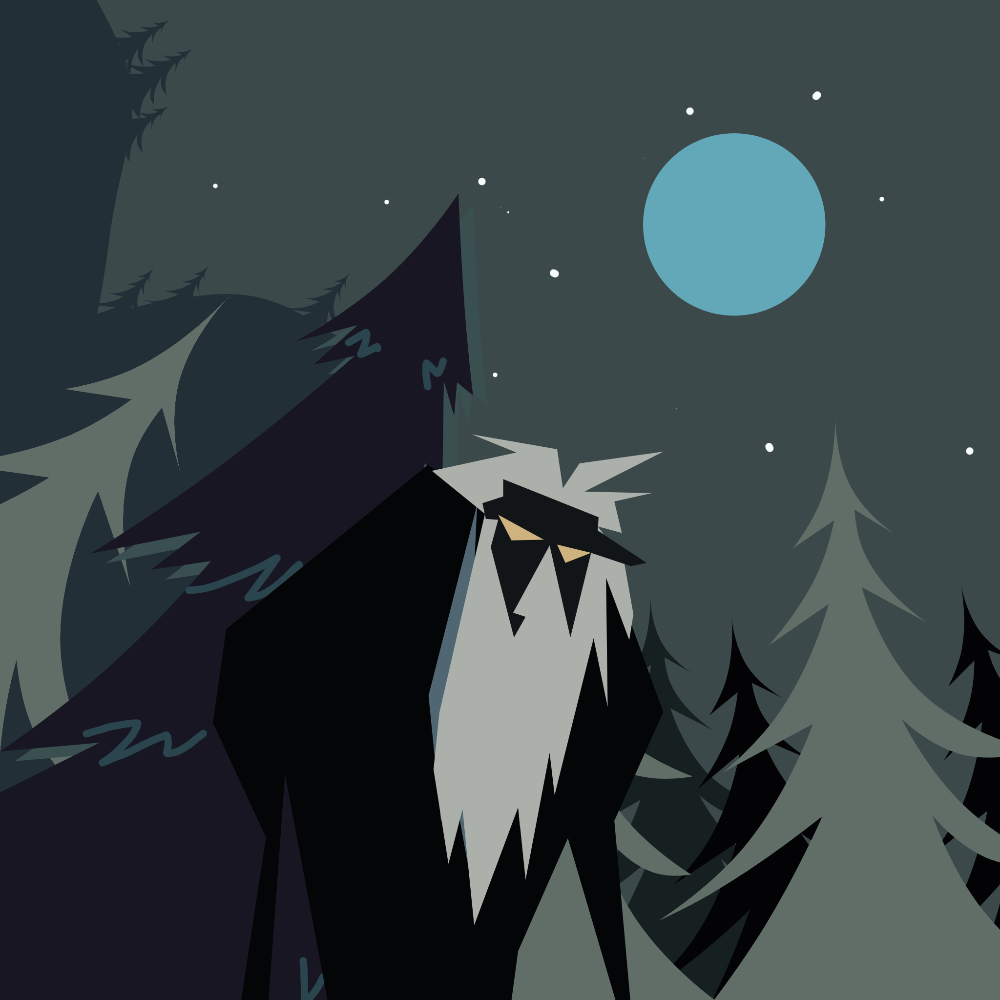

Local folklore · Interactive cards
Meet the
Kulariut.
Kulariut is a mysterious creature in local folklore, often described as an old man with a long white beard who watches over homes at night, living near mangroves and bamboo groves.

Stories live in the places we remember
Tap a card to learn